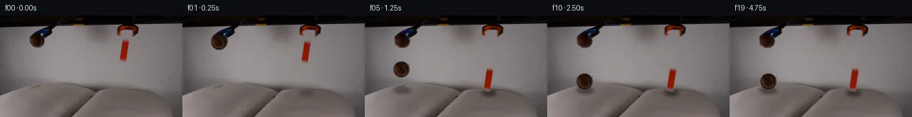

![首帧]()

Round 00
2026-11-04T19:17:35.088856+00:00像素候选变化代码 +256/−0inspection 更新
pixels 2780f586c52cca8b · code 26580ae5d94b92ee
查看本轮 generate.py 真实 diff
--- previous/generate.py
+++ current/generate.py
@@ -0,0 +1,256 @@
+"""PixelWorld-Text case_0003: two grabber tools release a brown tennis ball
+and an orange block; both fall onto two cushions on the table and settle.
+
+Pure local pixel work: numpy + PIL + cv2 inpainting, analytic physics.
+Frame 00 is the untouched first_frame.png.
+"""
+from pathlib import Path
+import numpy as np
+from PIL import Image
+import cv2
+
+import artifact_io
+
+ROOT = Path(__file__).parent
+FRAMES_N = 20
+DT = 0.25
+G = 52.0 # pixel gravity (px/s^2), tuned to fill ~1.5 s of action
+
+# ---------------------------------------------------------------- geometry
+F0 = np.array(Image.open(ROOT / "first_frame.png").convert("RGB"))
+H, W, _ = F0.shape
+R = F0[..., 0].astype(int); Gc = F0[..., 1].astype(int); B = F0[..., 2].astype(int)
+V = (R + Gc + B) / 3.0
+
+# --- ball (held in left claw) ------------------------------------------
+BALL_CX, BALL_CY0, BALL_R = 52, 36, 11
+ball_roi = np.zeros((H, W), bool)
+ball_roi[24:48, 38:68] = True
+brown = (R >= 26) & (R <= 120) & (R > Gc + 7) & (R > B + 12)
+# soft warm blends at the fuzzy rim
+rim_warm = (R > Gc + 5) & (R > B + 9) & (V < 105)
+ball_mask = ball_roi & brown
+ball_soft = ball_roi & (brown | rim_warm)
+ball_remove = cv2.dilate(ball_soft.astype(np.uint8), np.ones((3, 3), np.uint8)).astype(bool)
+ball_remove &= ball_roi
+# never eat the claw finger / metal: keep blue and near-black pixels intact
+keep = ((B > R + 10) & (B > Gc + 4)) | (V < 45)
+ball_remove &= ~keep
+
+# --- orange block (held in right claw) ----------------------------------
+block_roi = np.zeros((H, W), bool)
+block_roi[31:69, 164:187] = True # y>=31 keeps the jaw pad at y15-28 intact
+orange = (R > 110) & (Gc < 100) & (B < 80) & (R - Gc > 30)
+block_rim = (R > Gc + 7) & (R > B + 12) & (R > 55) & (R < 200)
+block_mask = block_roi & orange
+block_soft = block_roi & (orange | block_rim)
+block_remove = cv2.dilate(block_soft.astype(np.uint8), np.ones((3, 3), np.uint8)).astype(bool)
+block_remove &= block_roi
+
+# --- static background: inpaint vacated object pixels -------------------
+remove = (ball_remove | block_remove).astype(np.uint8) * 255
+BG = cv2.inpaint(cv2.cvtColor(F0, cv2.COLOR_RGB2BGR), remove, 2.5, cv2.INPAINT_TELEA)
+BG = cv2.cvtColor(BG, cv2.COLOR_BGR2RGB)
+
+# ---------------------------------------------------------------- sprites
+rng = np.random.default_rng(7)
+
+def make_ball_sprite():
+ """27x27 RGBA sprite, center at (13,13). Real brown pixels copied from
+ frame 0; occluded cap / holes filled with matched analytic felt shading."""
+ S = 27; c = S // 2
+ yy, xx = np.mgrid[0:S, 0:S]
+ dx = xx - c; dy = yy - c
+ d = np.hypot(dx, dy)
+ rgb = np.zeros((S, S, 3), np.float64)
+ alpha = np.zeros((S, S), np.float64)
+ # analytic body colour: vertical gradient sampled from real ball means
+ shade_top = np.array([44., 21., 13.]); shade_mid = np.array([53., 29., 20.])
+ t = np.clip((dy + 9) / 16.0, 0, 1)[:, :, None]
+ body = shade_top[None, None] * (1 - t) + shade_mid[None, None] * t
+ body *= (1.0 - 0.30 * (np.clip(d, 0, BALL_R) / BALL_R) ** 2)[:, :, None]
+ noise = rng.normal(0, 1, (S, S, 1)) * np.array([5., 4., 3.])[None, None]
+ felt = np.clip(body + noise, 0, 255)
+ # faint darker curved felt seam (tennis ball)
+ seam = np.exp(-((dx + 3.2 * np.sin((dy + 6) * 0.42)) ** 2) / 3.0)
+ felt = felt * (1 - 0.30 * seam[:, :, None])
+ inside = d <= BALL_R - 0.7
+ edge = (d > BALL_R - 0.7) & (d <= BALL_R + 1.1)
+ rgb[inside] = felt[inside]
+ alpha[inside] = 1.0
+ alpha[edge] = np.clip((BALL_R + 1.1 - d[edge]) / 1.8, 0, 1)
+ rgb[edge] = felt[edge]
+ # paste real observed pixels where they truly belong to the ball
+ for sy in range(S):
+ for sx in range(S):
+ fx, fy = BALL_CX + sx - c, BALL_CY0 + sy - c
+ if 0 <= fx < W and 0 <= fy < H and ball_mask[fy, fx]:
… diff truncated; 169 more lines …